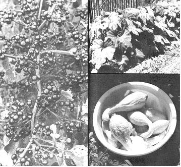

LEFT: The Garden Huckleberry is naturally prolific and yields scads of blue-black berries that are excellent for pies, jams and sauces. Don't worry if insects eat holes in the leaves (it's never damaged my plants) . . . and definitely do not spray huckleberries with any toxic chemicals! RIGHT ABOVE: Save garden space by planting summer squash or newer bush varieties (Gold Nugget, Bush Buttercup and bush-type Table Queen) of winter squash as attractive borders around fenced areas. The compact plants yield well. I store mine whole with pumpkins and sweet potatoes in a dry, empty room which is kept at about 50?F during the winter. RIGHT BELOW: Yellow Crookneck (pictured) and Yellow Straightneck are excellent freezing squash. They're also amazing producers as this day's picking from four plants will show. The best quality fruits are five to seven inches long and should be harvested every day or two for top capacity yields over a long period. Natural texture is best preserved if' the squash are thoroughly cooked with just enough water to prevent scorching (stir often) and then stored in one or two pound containers.